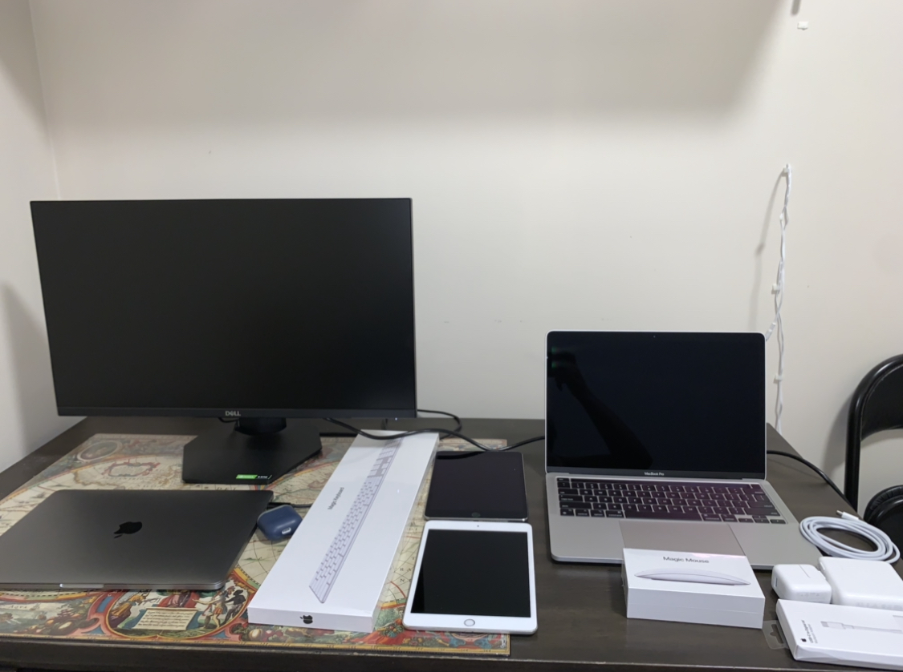
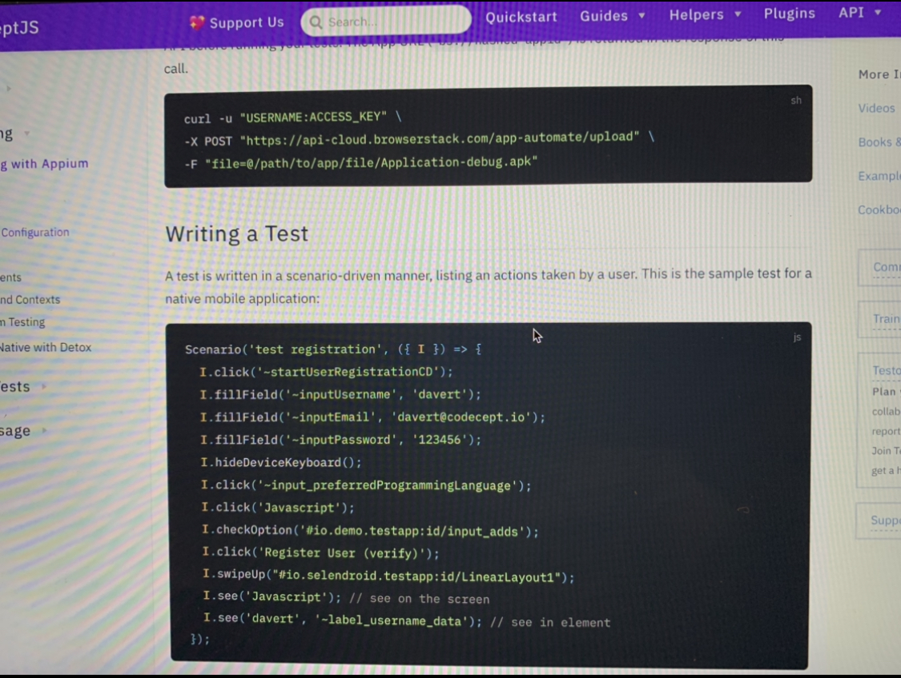

This is my co-op work term report. This report has all the information about my 2nd summer co-op work term at Tulip Retail. This report will tell you about all my learnings, experiences, and knowledge gained by me during this work term. This was the 2nd time I worked at Tulip Retail so during this work term I really took deep dive into advanced testing-related tasks. Overall this work term made me push my limits and allowed me to be something close to a professional test automation developer.
This summer, I was fortunate enough to be reoffered a co-op position at Tulip Retail. Tulip is a SaaS-based business whose major goal is to use technology to improve and alter the retail industry. Since its founding in 2013, Tulip has had tremendous success. The software teams at Tulip are made up of a diverse group of intelligent individuals with a variety of experiences and job titles, including quality assurance specialists, IOS developers, DevOps engineers, and web developers. The full integration of Tulip's products with IOS smartphones and their web-based internal software systems allows merchants to realize the full potential of their businesses while providing customers with the greatest possible shopping experience. Many prestigious brands, including Salvatore Ferragamo, Michael Kors, Tory Burch, and others, have expressed their admiration for these advanced applications developed by Tulip Retail. Tulip offers their staff four-day work weeks, allowing for a very comfortable working environment. The Tulip staff is the friendliest and most willing to assist. One of Canada's finest workplaces for technology in 2021, Momentum Canada's Next 100M Companies, and Technology Fast 500 in North America by Deloitte are just a few of the outstanding honors given to Tulip. Although the job was done entirely remotely during the present pandemic situation, Tulip's corporate office is in Kitchener, Ontario. Working for Tulip, I was a member of the software quality assurance group also in addition to automation scripts, I was in charge of testing the new frontend/backend functionality.
This summer I worked as a test automation developer at Tulip Retail for the second time. I was part of the quality assurance team and I worked closely with both manual and automation testers. I was constantly working on Tulip's biggest and the most complex application throughout the work term. I was writing automation scripts for the application on which I was working on. As the application I was working on was already very large and it was expanding rapidly so it was very hard to manually test everything, so along with me, there were other automation developers who were constantly working on the application as a team. We were writing automation scripts to test new features as well as the old features as a part of regression testing which were deployed everday and gave us an idea about what was breaking and what was working fine. The most interesting task that I did during my work term would be refactoring major automation suites all by myself. So I had to go through almost the whole automation codebase and then I had to find areas that could be improved or if they were unnecessary. This was one of the most challenging tasks during my co-op. Another unique part of my job was that I was also doing manual testing if any of the team members were on leave for some time, this made me work for 2 teams under the quality assurance department which means that I was sometimes handling 2 different job positions at once. Since I had already done a co-op at Tulip retail in the past so I knew about most of the skills that were necessary for the job, but still skills like knowledge about different concepts like unit testing, smoke testing, regression testing, UI testing, integration testing, API testing using postman, Azure DevOps server to understand application lifecycle and some experience with any automation framework are the ones that one should have some idea about before starting the job. Most of these skills I learned myself while making projects and testing them and I learned some on the job. Since I haven't taken a testing course at the University so I trained myself with help of the internet and my colleagues at the workplace.
 Before starting my work term I had set a few goals in my mind which I wanted to achieve by the end of my work term. These goals allowed me to work hard and be a better learner and employee by the end of my work term. Here are my goals for this work term and how I achieved these goals.
As I worked in 2 teams which were the manual testing team and the automation development team so I wanted to learn about how to organize my work and manage my time appropriately for each team.
Action Plan:
I talked to my manager and I made a rough estimate of how much work I would have during the week and I added timelines to my calendar and made sure to stick to those timelines and I tried to organize my work and managed my time appropriately to complete my tasks.
Measure of success:
I was able to stick to the timelines that I made and I made sure to deliver my tasks from both the teams on time without hurrying to finish them, by working in a very organized way. This is how I was successful in achieveing my goal.
I had a lot of coding to do during this term so I wanted to improve upon on my reading comprehension because I was expected to be able to read a lot of code as well as a lot of documentation.
Action Plan:
I tried to go through more and more of already written code as this gave me an idea of how to go over and read large codebases. I had also spent a lot of time in reading documentation as this gave me an idea about how documentations are meant to be read.
Measure of success:
I was able to interpret the documenation properly and understand the codebase and contribute to that codebase. This is how I felt that I was successful in achieveing my goal.
As I had to go through a lot of code and new application versions regularly so I wanted to improve upon my analysis skills to better understand how everything worked by constantly inquiring about things.
Action Plan:
I constantly tried to understand each line of code to better analyze the codebase and I inquired about the things that I did not understand from my team members, this created a habit of inquiring and analysing in me while reading and writing code.
Measure of success:
By the end of the work term I was able to analyse large codebases and applications and I understood how to properly inquire about technical terms from my teammates. This is how I felt that I was successful in achieveing my goal.
This co-op work term will have a very big impact on my knowledge and skills. This work term was the first time when I worked like a full-time professional without a lot of help from other team members. During this term, I got well versed with the automation frameworks like appium and I also refreshed my manual testing skills. Along with all the technical skills, I also learned how to use critical thinking during high-pressure situations and how to communicate with other team members to get the tasks completed. During the meetings and when collaborating with the developers I learned a lot about web and app development. This work term made me confident about my skills and now I can do testing and write automation scripts on large applications.
My time working at Tulip was incredibly nice because everyone there was so encouraging and so ready to teach me new skills. Since everyone was willing to share their experiences and address my foolish inquiries, I enjoyed working with various teams. There are a select few outstanding individuals that supported me at every turn and helped me learn very quickly.
Thank you everyone :)